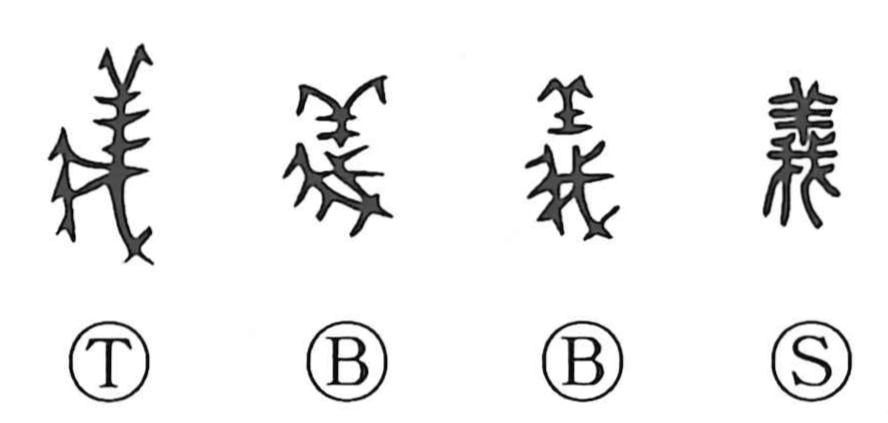

Explanation
義 combines 羊, a sheep, with 我, a saw. The animal is cut for a sacrificial offering. Sheep were frequently used, and the body could be divided so that its fitness was visible within as well as without.
A suitable victim had to be complete and free of defects. Sound fleece, horns, and hooves were not enough; the internal organs also had to show no disease. Cutting the body probably served to display this inner soundness. An offering meeting all these conditions was 義, ‘right’ or ‘fit’ before the gods.
From the faultless sacrifice, the character broadens to what is proper and right generally: a correct course, a duty, or a principle to follow. The related 羲 shows the cut lower part hanging down, preserving the sacrificial setting in 犠.